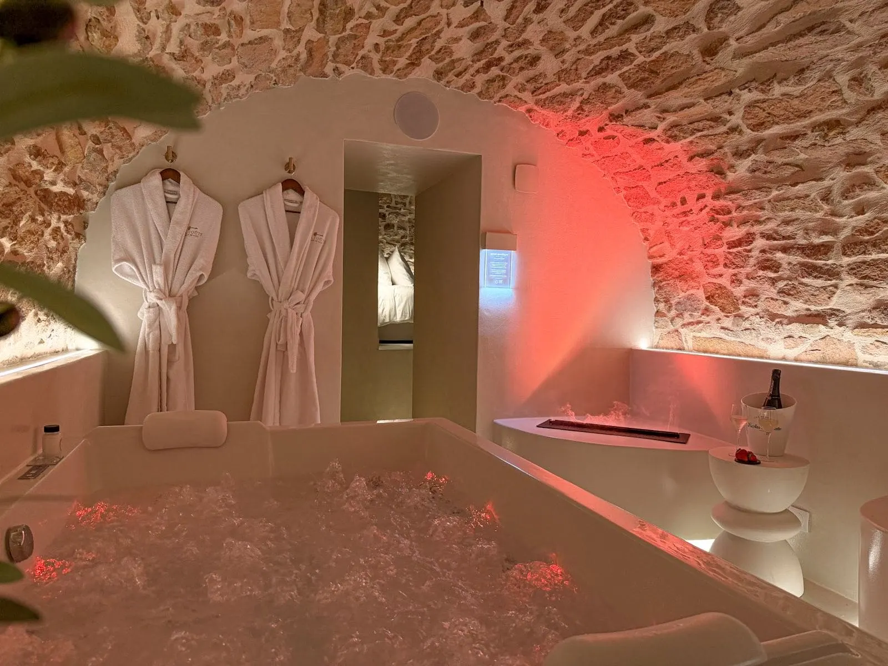

Hygiène du jacuzzi privatif
la question qu'on nous pose
C'est l'une des premières questions qu'on nous pose avant une réservation : comment est entretenue la baignoire entre deux séjours ? La réponse tient en un mot — vidée.

C'est une question légitime, et on préfère y répondre clairement plutôt que de la laisser en suspens avant une réservation. Beaucoup de voyageurs associent le mot « jacuzzi » à un bain partagé, dont l'eau circule de client en client. Ce n'est pas notre fonctionnement.
Jacuzzi, spa, baignoire balnéo : de quoi parle-t-on ?
« Jacuzzi » est à l'origine une marque déposée, devenue au fil du temps un terme générique pour désigner n'importe quel bain à remous — un peu comme on dit « Frigidaire » pour un réfrigérateur. Le terme générique correct est spa ou bain à remous. Ce que nous proposons, plus précisément, est une baignoire de balnéothérapie : une baignoire à jets, intégrée à la salle de bain de la suite, qui fonctionne sur un principe différent d'un spa extérieur ou d'un jacuzzi d'hôtel à usage collectif.
La différence qui change tout pour l'hygiène
Un spa ou jacuzzi partagé — en institut, en hôtel, ou en location de spa extérieur — conserve généralement la même eau entre plusieurs utilisations, parfois sur plusieurs jours. Cette eau doit alors être traitée en continu (chlore, brome ou équivalent) et les circuits de tuyauterie entretenus régulièrement : un entretien insuffisant peut favoriser le développement de bactéries dans les canalisations, un point régulièrement souligné par les fabricants de ce type d'équipement.
Une baignoire de balnéothérapie fonctionne à l'inverse : elle repart de zéro à chaque utilisation. Elle se vide intégralement après le bain, et se remplit d'eau propre pour la fois suivante. Pas d'eau stockée, pas de traitement chimique continu à gérer, pas de circuit partagé entre des bains successifs sur plusieurs jours.
Comment ça se passe à La Voûte des Sens
Notre baignoire balnéo est vidée et nettoyée à chaque fin de séjour, avant d'être remplie d'eau propre pour les voyageurs suivants. L'eau n'est jamais partagée entre deux groupes : ce que vous trouvez à votre arrivée n'a servi à personne avant vous pendant votre séjour.
Peignoirs, serviettes et produits de toilette sont fournis et vous attendent à votre arrivée — rien à prévoir de ce côté-là. Voir le logement et les disponibilités.
Questions fréquentes
L'eau du jacuzzi est-elle changée entre chaque client ?
Oui. Il ne s'agit pas d'un jacuzzi au sens d'un spa à eau recyclée : c'est une baignoire de balnéothérapie, vidée intégralement et nettoyée après chaque séjour, puis remplie d'eau propre pour les voyageurs suivants. L'eau n'est jamais partagée entre deux groupes.
Quelle est la différence entre un jacuzzi et une baignoire de balnéothérapie ?
« Jacuzzi » est à l'origine une marque déposée, devenue un terme générique pour les bains à remous. Un spa ou jacuzzi partagé conserve en général son eau entre plusieurs utilisations et demande un traitement chimique continu. Une baignoire de balnéothérapie, comme la nôtre, repart de zéro à chaque usage : elle se vide et se remplit à chaque fois.
Pourquoi l'hygiène d'un spa à eau partagée demande-t-elle plus de vigilance ?
Quand l'eau circule entre plusieurs bains sans être changée, un entretien insuffisant des circuits et de la tuyauterie peut favoriser le développement de bactéries. C'est pourquoi ces équipements partagés nécessitent un traitement de l'eau permanent et un suivi rigoureux. Une baignoire vidée après chaque usage s'affranchit en grande partie de cette contrainte.
Faut-il apporter ses propres serviettes ou produits de toilette ?
Non, tout est fourni sur place : peignoirs, serviettes et produits de toilette vous attendent à votre arrivée.

La Voûte des Sens
Une voûte de pierre,
deux personnes.
Balnéo privative, douche sensorielle et pièce secrète, à Villefranche-sur-Saône, à 40 minutes de Lyon. 5,0/5 sur 20 commentaires.